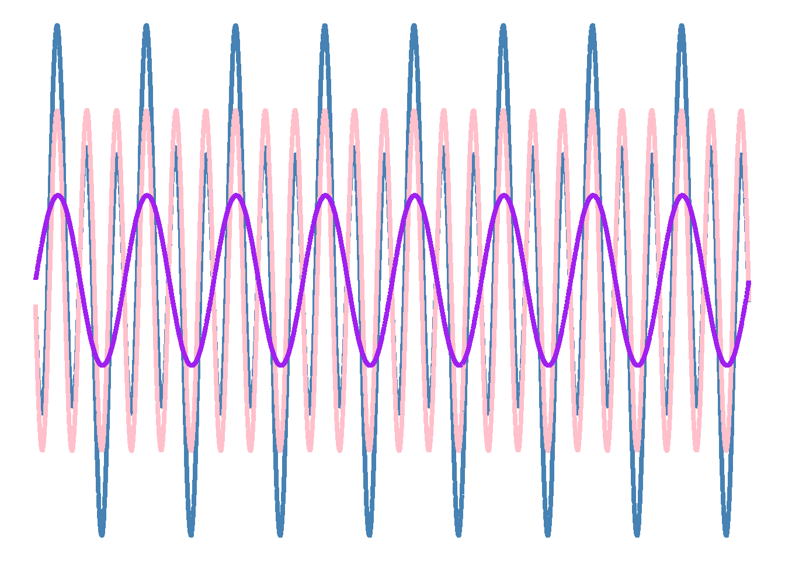

---
title: "A basic quarto report without code"
date: 2025-09-15
author: Name Nameson
---8 Writing a paper using Quarto
8.1 The quarto publishing system
The quarto publishing system allows you to create reports, books, presentations, websites, and blogs by converting computer code (like R and Python) and markdown syntax to different output formats. In this chapter, we will briefly explore some key features of this system that make it easier to work with.
8.2 The basics - What Quarto does
Quarto is a software that renders source documents (.qmd files) to different output formats, like DOCX, PDF, or HTML Figure 8.1. The rendering is made possible by pandoc, which is a software that converts between different markup languages. A markup language is a syntax used to include structure and format in text written in a plain text editor. The additional advantage of Quarto, compared to the simple rendering of markup syntax, is that it also executes embedded code written in, for example, R, Python, or Julia. Code integration is achieved through code blocks, which makes it possible to write fully reproducible data-driven reports.

When working in a Quarto file, you are essentially writing a computer program that, when successfully rendered, will produce an output document based on prose, data, and code. Quarto is the latest generation of software designed to simplify writing technical reports. The idea of combining natural language and computer code (literate programming) is not new (Knuth 1984). Predecessors to Quarto include Sweave and R markdown (knitr) (Xie, Allaire, and Grolemund 2019). The strength of Quarto includes its increased reliability during rendering documents, flexibility in combining different coding languages and output formats, and simple mechanisms for creating templates and extensions.
Knuth, Donald E. 1984. “Literate Programming.” Comput. J. 27 (2): 97–111. https://doi.org/10.1093/comjnl/27.2.97.
Xie, Yihui, J. J. Allaire, and Garrett Grolemund. 2019. R Markdown: The Definitive Guide. Boca Raton: CRC Press, Taylor and Francis Group.
8.2.1 The YAML field
The YAML field is the meta data field for a Quarto document. It can contain key-value information that is used in the rendering process, such as author, date, title, etc. A basic YAML field, defined using ---, could look something like this:
8.2.2 The markdown syntax
When writing prose in Quarto, we can take advantage of the simple markdown syntax for formatting. The benefits of using markdown are that simple formatting is available from the keyboard (no more hidden formats induced by WYSIWYG1 editors), and the styling of the text is separated from the creation of the content.
1 A What You See Is What You Get text editor is an editor where text is formatted as you write using a graphical user interface. Changing font styles, size, emphasis, etc, to text closely resembling the output. The danger of writing using a WYSIWYG is that formatting is implicit, and sometimes out of control!
The idea of using markdown is that everything is formatted in plain text. This requires a little bit of extra syntax. We can use bold or italic, striketrough, superscript and subscript. Lists are also an option as numbered:
- Item one
- Item two
And, as unordered
- Item x
- Item y
- With sub item z
Links can be added like this.
A table can be added also, like this:
| Column 1 | Column2 |
|---|---|
| Item1 | Item 2 |
The whole section above will look like this in your plain text editor:
The idea of using markdown is that everything is formatted in plain text.
This requires a little bit of extra syntax. We can use **bold** or *italic*,
~~striketrough~~, ^superscript^ and ~subscript~. Lists are also an option as numbered:
1. Item one
2. Item two
And, as unordered
* Item x
* Item y
+ With sub item z
Links can be added [like this](https://rmarkdown.rstudio.com/authoring_basics.html).
A table can be added also, like this:
|Column 1|Column2|
|---| ---|
|Item1 | Item 2|
There are many good references for markdown, the Quarto guide provides a Quarto specifc version.
8.2.3 Additional formatting
In addition to plain markdown, we can also write HTML or LaTeX in quarto files.
HTML is convenient when we want to add formatted text beyond the capabilities of markdown, such as color. Some formatting might be considered more easily remembered such as subscript and superscript. Notice that HTML and markdown syntax can be combined:
Some Markdown text with some blue text, superscript.
See here for syntax
HTML is convenient when we want to add formatted text
beyond the capabilities of markdown, such as
<span style="color:red">color</span>. Some formatting
might be considered more easily remembered such as
<sub>subscript</sub> and <sup>superscript</sup>.
Notice that HTML and markdown syntax can be combined:
Some Markdown text with <span style="color:blue">some *blue*
text, <sup><span style="color:red">super</span>**script**</sup></span>.LaTeX is another plain text formatting system, or markup language, but it far more complex than markdown. Text formatting using LaTeX is probably not needed for simpler documents as markdown and HTML will be enough. The additional advantage of using LaTeX comes with equations.
Equations can be written inline, such as the standard deviation \(s = \sqrt{\frac{\sum{(x_i - \bar{x})^2}}{n-1}}\). An equation can also be written on the center of the document
\[ F=ma \tag{8.1}\]
We are also able to cross-reference the equation Equation 8.1 for force (\(F\)).
A larger collection of equations is sometimes needed to describe a statistical model, as in Equation 8.2.
\[ \begin{aligned} \begin{split} \text{y}_i &\sim \operatorname{Normal}(\mu_i, \sigma) \\ \mu_i &= \beta_0 + \beta_1 \text{x}_i, \end{split} \end{aligned} \tag{8.2}\]
The equation above could look like this in your editor, including the tag ({#eq-model}) used for cross-referencing:
$$
\begin{align}
\text{y}_i & \sim \operatorname{Normal}(\mu_i, \sigma) \\
\mu_i & = \beta_0 + \beta_1 \text{x}_i,
\end{align}
$$ {#eq-model}See this wikibook on LaTeX for an overview on mathematics in LaTeX.
8.2.4 Code chunks
We can add a code chunk using the following syntax:
```{r}
#| label: fig-simple-plot
#| message: false
#| echo: true
dat <- data.frame(a = rnorm(10, 10, 10),
b = runif(10, 1, 20))
plot(dat)
```We recognize the R code inside the code chunk but we have only touched upon code chunk settings. These are settings that tells R (or quarto) how to handle output from the code chunk. message: false indicate that any messages from R code should not be displayed in the output document. echo: true indicates that the code in the code chunk should be displayed in the output document. The label is important as it enables cross-referencing the output. If your code chunk outputs a figure the prefix fig- must be in the label to enable cross-referencing. Likewise, if your code chunk creates an table, the prefix tbl- must be in the label. Possible code chunk settings also include figure and table captions.
Settings can also be specified in the YAML field in quarto files. We might not want to display our code, messages or warnings in the final output. We would specify this in the YAML field as
---
title: "A basic quarto report without code"
execute:
echo: false
message: false
warning: false
---See here for documentation on execution options for code chunks in quarto. See also Chapter 29 in R for data science.
8.2.4.1 Tables
The number of table extensions for creating tables based on data in Quarto documents is overwhelming (see here for an overview. This may be due to historical reasons, as some table packages were more or less effective at rendering to different formats (e.g., DOCX vs. PDF vs. HTML).
A recently developed package is the gt package. It is capable of rendering output in all available formats without differing syntax.
8.2.5 Cross-referencing, references and footnotes
We have mentioned cross-referencing above, this basically means referencing specific parts of your document in the text. A figure might be mentioned in the text, such as Figure 8.2. To insert the cross-reference in text, use the @fig-label syntax where fig- is the required prefix for figures and label is a user defined unique identifier. The label should be included in the code chunk under such as #| label: fig-label. The equivalent prefix for tables is tbl-.

We might want to cross-reference a section in our document. This is easily done by inserting a tag at the section header such as {#sec-cross-reference}, this tag can be referenced in text using @sec-cross-reference resulting in Section 8.2.5. The sec- part is the required prefix for a section.
For additional details on cross-referencing, see the quarto documentation on cross-referencing.
Citations are mandatory in academic writing. Be sure to take advantage of the built in support for citations. When writing in quarto we can think of a reference as having three parts. The identifier, the reference and the style. We use the identifier when authoring. For example, let’s cite the R for Data Science book, we do this by using the following syntax [@wickham2023]. The syntax requires that we have linked a bibliography to the document. The bibliography should include the reference, with the same identifier. The bibliography is a collection of reference entries written in bibtext format (see below). It must be included in the document meta data field (YAML field).
@book{wickham2023,
title={R for data science},
author={Wickham, Hadley and {\c{C}}etinkaya-Rundel, Mine and Grolemund, Garrett},
year={2023},
publisher={" O'Reilly Media, Inc."}
}Notice the identifier. When adding the citation [@wickham2023] it will turn out to (Wickham, Çetinkaya-Rundel, and Grolemund 2023) in the formatted text and added to the bottom of the document as a full reference. If we want another citation style we can specify a file responsible for citation styles. The default is the Chicago style. Specifying a citation style file in YAML will change the style, for example csl: my-citation-style.csl tells quarto to use the file my-citation-style.csl when formatting citations. This file can be edited or copied from a large collection of possible styles located in the citation style language repository. The repository is hosted on GitHub and searchable, click “Go to file” and type “vancouver” to get examples of CSL files that uses a Vancouver-type citation style.
Wickham, Hadley, Mine Çetinkaya-Rundel, and Garrett Grolemund. 2023. R for Data Science: Import, Tidy, Transform, Visualize, and Model Data. 2nd edition. Sebastopol, CA: O’Reilly Media, Inc.
2 This is a footnote.
Footnotes can be handy when writing. In the default mode, these will be included as superscript numbers, like this2, numbered by order of appearance.
The syntax for including footnotes is straight forward. Notice that the text for the footnote is included below the paragraph using the identifier created in the text.
See here for footnote syntax
Footnotes can be handy when writing. In the default mode,
these will be included as superscript numbers, like
this[^footnote], numbered by order of appearance.
[^footnote]: This is a footnote.See the quarto documentation on citations and footnotes.
see also Chapter 29 in R for data science.
8.3 Output formats
When starting a new writing project, a simple output format can help you avoid getting stuck in formatting issues. HTML is my preferred output format because it renders quickly, making problems apparent right away. A new, flexible output format for PDF files called Typst (see here for Quarto documentation) also renders fast. This might be preferred when aiming for a standalone PDF with nice default formatting.
There are several template alternatives for specific output formats designed for, e.g., different journal formats (see here for an overview). These can help you put together a paper for submission to your favourite journal.
As mentioned above, Quarto can be used for multiple output formats. The HTML output allows for the creation of blogs and websites. Transforming, for example, a blog post into a PDF document is straightforward, as it involves only changing basic settings in the YAML field.
In multi-chaper projects, meta data (YAML) is defined in a separate file named _quarto.yml. This file defines a quarto project and makes it easy to manage chapters and global settings for the project. See here for an introduction to the book format, and here for the website format.